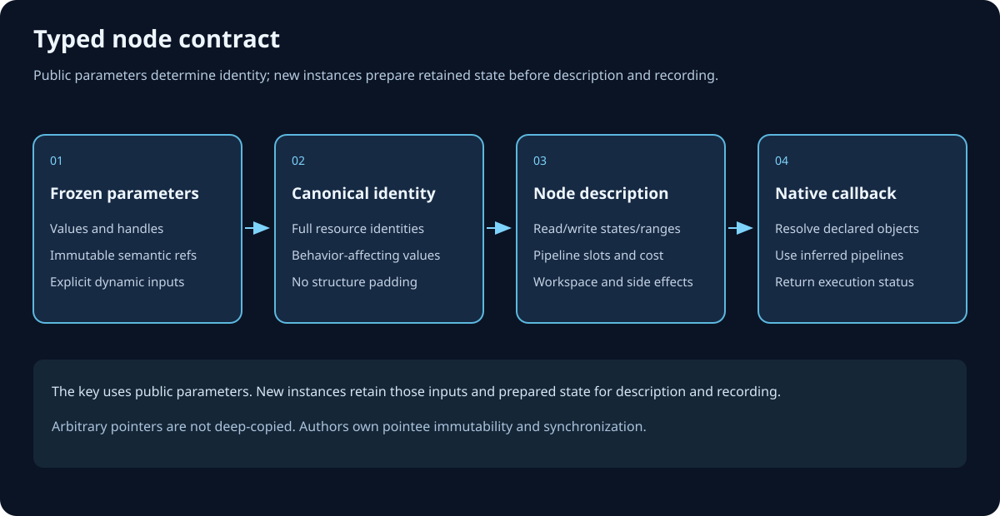

Persistent dependency graphs
Typed node definitions
Publish named operation callables, then invoke them with typed parameters.
Learning objectives
Register typed node definitions, derive canonical keys and descriptions, and record work through inferred pipeline slots.
Define the contract
Derive an operation from TArdaDependencyNode or a domain specialization. The base enforces metadata, canonical-key, description and execution hooks at compile time. Keys encode semantic values and full resource identities without padding. Descriptions declare accesses, pipeline requests, cost, workspace and side effects. Native nodes record commands; CUDA nodes append operations to the supplied sequence. The custom-node recipe shows a complete base-derived operation and explains immutable device state and mutable instance state.

Declare, define and invoke
Publish each node with ARDA_DECLARE_GRAPH_NODE(NodeClass, InvocationName); immediately after the class declaration, then place ARDA_DEFINE_GRAPH_NODE(NodeClass, InvocationName); once in its implementation, in the same namespace. The renderer includes the header and calls InvocationName(Edit, Parameters) or InvocationName(Edit, Input, Output, Value). Positional fields follow parameter declaration order and retain omitted defaults. The exported const callable is shared across translation units and owns no graph or execution state.
// Header, after FArdaMemoryCopyBufferNode's class declaration:
ARDA_DECLARE_GRAPH_NODE(FArdaMemoryCopyBufferNode, CopyBuffer);
// Owning .cpp, after including the header:
ARDA_DEFINE_GRAPH_NODE(FArdaMemoryCopyBufferNode, CopyBuffer);
// Renderer:
CopyBuffer(Edit, Source, Destination);The callable name must be unique in the C++ namespace. The separate GetMetadata name and version identify its implementation in the runtime registry. Neither macro performs startup registration; the first invocation registers on demand. Each call creates a fresh operation with a frozen parameter snapshot, including repeated calls through the same global object. Optional diagnostic names must be unique within the construction.
Follow the complete node registration walkthrough for a header, implementation, linking instructions, canonical identity, declared accesses and error handling. Call NodeClass::Register() explicitly before registry enumeration or string lookup when discovery is needed. Edit.Invoke(DefinitionName, Parameters) validates the registered public parameter schema; missing definitions and mismatched schemas fail through the edit. Static NodeClass::Invoke and generic Edit.Invoke<NodeClass> share the same authoring path. Free functions such as CopyTo can overload across resource permutations and select different node callables; their names remain distinct from callable object names. Removing registry lookup leaves existing graph definitions alive.
Declare hardware and environment needs
Override the inherited static GetRequirements hook to select portable features, CUDA limits and named environment checks from public parameters. Explicit admission runs before output declaration, validation and preparation, on every invocation. Inferred descriptor requirements are checked after description and before graph binding setup. Read feature requirements for complete recipes, rollback behavior and the distinction between device support and resource effects.
Snapshot boundaries
Value containers are copied into retained const storage. Pipeline configurations are copied separately. Arbitrary semantic pointees remain the author’s responsibility: keep them immutable and include their meaning in the key. Deliberately dynamic upload sources require explicit synchronization and must not change compiled accesses, shapes or pipelines.
Automatic pipeline slots
Shader contributions and FArdaInductorPipelineRequest slots describe pipeline needs. Requests may seed complete shader/fixed settings. Resolve the compiler-assigned result with GetPipeline("slot"). Declared color/depth targets create a framebuffer and complete formats and sample count. Matching resource accesses are mandatory.
Internal native sequences
One node may implement multiple dispatches as one logical producer. Emit internal UAV barriers explicitly; changing pipelines or repeating a D3D12 UAV state does not guarantee ordering. CUDA operations append to FArdaCudaSequence for one contiguous framework-stream batch.
Joins and stage-only nodes
Connect arda.sync with Edit.Order(Producer, Consumer) for named joins. mbPipelineStageOnly contributes ancestry without a dispatch. Both retain dependency meaning without empty native command lists. Use mbSideEffect for observable non-resource effects.
Propagate errors
Native callbacks return FArdaRHIStatus. Propagate binding, transfer, state and adapter failures. Resolve only declared resources. A failure cannot undo earlier accepted GPU work; completion tickets preserve its lifetime.
Chapter summary
Public parameters determine canonical identity. Preparation retains immutable device state and private instance state alongside those parameters. Every class follows the same contract; dependencies come from declared resource accesses.
Source and API
Read the developer guide, pipeline guide, public API reference and graph declarations.